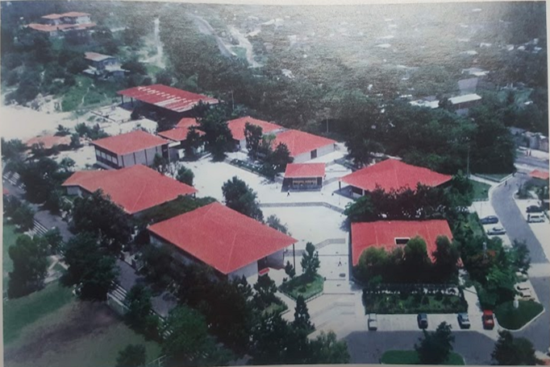

HISTORIA DE
CREA - J
En la década de los 90´s, los problemas sociales y el clima de desesperanza se encontraban en todos lados, dando un panorama desalentador para el país en general, pero, sobre todo, creando incertidumbre en los miles de jóvenes con sueños y esperanzas. Es por ello, que se decide comenzar un nuevo proyecto, iniciando con el traslado del Colegio Don Bosco de Avenida Peralta hacia Km 1 1/2 Calle a plan del Pino, Soyapango, lo que ahora conocemos como Ciudadela. Esta acción da paso a Crea-J, una idea innovadora por parte de la comunidad educativa, que daba respuesta a las problemáticas sociales que se vivían durante esa época. Idea liderada por el Pbro. Pierre Muyshondt, quién era el coordinador de estudios, en 1990, mientras se desarrollaba la guerra civil.
CASA NUEVA, IDEAS NUEVAS
Al recién trasladarse en mayo de 1990, cierto grupo de jóvenes en conjunto al Pbro. Pierre Muyshondt, observan todas las nuevas posibilidades que tenían al encontrarse en un lugar tan inmenso como lo es Ciudadela Don Bosco, es por ello, que, al ver esta gran virtud, decidieron crear un evento tal, dónde los jóvenes pudieran a darse a conocer, convivir y exhibir todos sus conocimientos y habilidades.
Para esto se tomó en cuenta la semana cultural o cívica, que se venía viviendo con anterioridad, y se le dio un aire de renovación. Y es así como nace Crea-J, bajo una diáspora complicada, gracias a la coyuntura social que se estaba viviendo, y se crea este símbolo de esperanza para cada uno de los jóvenes, un lugar donde puedan darse a conocer como el futuro de una sociedad salvadoreña lastimada gracias a la guerra.
¿Quiénes participaban en
Crea-J?
Para la realización de Crea-J, existía un comité para el mismo, en el cual, se veían envueltos y eran protagonistas, los jóvenes de diversos institutos a nivel nacional, escuelas, colegios y casas salesianas, donde todos, aportaban su granito de sal para que esta actividad cumpliera el propósito por el que nació, ser un lugar donde todos los jóvenes puedan ser felices y demostrar que son el futuro de un mañana que ellos construirán.
A raíz de esto, se encontró la necesidad de formar un grupo encargado de planificar y llevar a cabo Crea J, un conjunto de jóvenes conforman por primera vez el "Consejo de Crea J”, que estaba integrado por estudiantes de la promoción. Además, contaba con el apoyo de otros consejos externos, como el consejo del Colegio María Auxiliadora, Consejo del Instituto Nacional Francisco Menéndez, entre otras 23 instituciones, para que todas las instituciones pudieran, mediante el protagonismo juvenil, aportar y dar ideas para que fuera un evento donde no existiese barreras o desigualdad alguna.
Este consejo dura aproximadamente un mes, antes de que se convirtiera en Consejo Estudiantil. En este, se encontraban alumnos de la promoción, y los representantes de grado de los demás niveles, dando paso a la creación de comisiones donde estos pudieran desempeñar una labor más específica. Es importante el resaltar que antes este grupo de jóvenes no podía nombrarse “Gobierno” como se llama actualmente, ya que por la realidad social que se vivía en el país, no era factible el utilizarlo, por esa razón se optó por “Consejo estudiantil”, además que, se buscaba crear una igualdad, no una autoridad. Gracias a la gran labor de estos jóvenes, junto a profesores, autoridades del colegio, y el apoyo de los padres de familia, los estudiantes de todos los distintos niveles tuvieron la oportunidad de formar parte de este gran proyecto y crear nuevas experiencias que serán recordadas para toda la vida.